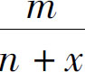
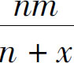
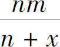
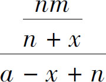
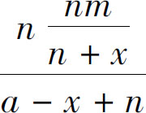
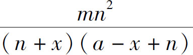
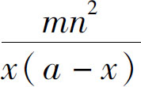
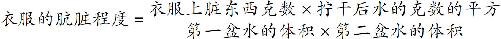

接下来我们要谈一谈生活中的数学．在日常工作和生活中，数学问题是无所不在的，我们要讨论的第一个问题是洗衣问题．衣服要想洗得干净，肯定是多洗几次比较好，所以我们就不讨论衣服洗几次的问题，而是把洗衣服的次数固定下来，假设衣服洗完了，剩下的工作就是要涮两遍了，而且这涮衣服的水，总量也是固定的．那我们要讨论的问题是什么呢？这个问题是，这涮两遍的用水怎么分配更干净：是两次涮衣服的水一样多干净呢？还是开始先少用点水，后多用点水更干净呢？也就是说，同样的水，涮两遍，如何分配水才能洗得最干净！有人说，先多用点水，因为一开始衣服脏；也有人说，先少用点水，因为要用更多的水涮最后一遍！这两种观点，哪个更对呢？
要解决这个问题，首先要判断一下它是不是数学问题．数学问题跟非数学问题有什么区别呢，如果不是数学问题的话，那它的答案就只能是定性的，只能大概地告诉我们干净不干净；但如果是数学问题，那答案就是定量的，它能够准确地告诉我们干净了多少．那么，这个问题应该怎么样去考虑呢？要知道这个问题里面可是一个数字都没有，我们怎么知道衣服干净了多少呢？这就是从实际生活中发现问题的难点了．要解决这类问题，我们同样要把这个问题分成三个步骤：第一步，从一个问题中发现可量化计算的规律；第二步，从给定的问题中发现常量和变量；第三步，列出算式并求得变量间的关系．接下来，我们就按这个步骤分析一下：
首先，这衣服洗得干净不干净是个什么问题，又如何进行量化评价呢？很简单，衣服上有脏东西，通过漂洗，可以把脏东西溶解到水中．那么，洗衣服的问题就可以简化为一个溶解问题．而衣服干净不干净就可以通过剩余在衣服上的脏东西的多少来判断．
规律找到了，接下来我们要发现常量了．所谓发现常量就是要从题目中找出数字，这个题目中除了衣服要洗两次之外，并没有其他数字，但是题目告诉我们了，涮衣服的水的总量是固定不变的，也就是说水的总量是个常量，我们假设它是a 升．那么，除此之外，还有哪些东西是不变的呢？这就需要仔细分析了：如果我们要知道哪种方法洗得干净，就必须用一样脏的衣服，一样的洗衣服的过程来洗．换句话说，除了两次涮衣服的水量不一样多，其他因素全部都要相同，才可以比较．但是，我们的题目中，具体要用哪些数量呢？首先，一开始，衣服上含有的脏东西的数量是固定的．我们可以假设它有m 克；其次，我们每次洗衣服都要把它尽量拧干了，而实际上我们知道，无论我们怎么用力拧，衣服上还会沾着一小部分水分，这些水的重量也是相对固定的，我们假设它是n 克．也就是说，沾着m 克脏东西、n 克水的衣服，经过洗涤再拧干以后，衣服上还会沾着n 克的水．就这样，过程中的常量都找到了，3个常量分别是：水的总体积a 升；衣服上粘的脏东西m 克；衣服拧干以后沾的水分n ．
接下来我们继续寻找变量．假设第一盆水的容量是x 升，那么因为总容量是a 升，所以第二盆水的容量就是a －x 升．然后我们就开始洗了：首先，我们把带着m 克脏东西和n 克水的衣服扔进第一个盆里，于是水的总量变为n ＋x ，涮洗一遍以后，脏东西均匀地溶解到水里，水里含有脏东西的比例就是

，当我们把衣服拧干以后，衣服上仍然沾着n 克的水，这n 克水中所含的脏东西一共有多少克呢？用n 乘以刚才的比例就可以了，也就是
；而后，我们把衣服扔进第二盆水中漂洗，第二盆水的总量是a －x ，扔进来的脏东西有多少呢？就是刚才衣服上沾着的
，用它除以水的总量a －x ＋n ，得到脏水的比例是
，从第二盆水里涮完以后捞出来，衣服上仍然沾着n 克水，这n 克水中的脏东西的总重量就是
，化简这个算式，得到最终结果为：
，衣服上沾有的水量n 和x 相比很小，在分母上可以被忽略，因此该结果可以近似看作：
．这个代数式表示的就是衣服最后的肮脏程度，如果我们把几个字母换成自然语言来表示就是：
通过这个算式不难看出，衣服一开始粘的脏东西越少越干净，衣服拧得越干衣服越干净，这样的结论符合我们的常识．因为在我们这个题目中，我们假设了衣服是一样脏的，所以这两个数字都不能变，影响衣服是否干净的关键是分母的部分，如果两盆水的体积乘积越大，这个分数值越小，衣服也就越干净．由于我们还没有学到二次方程求极值的问题，我们就先不计算具体的数值了，但是可以代入几个数字算一下，比如一开始有10升水，那么如果我们把它分成平均分成两份5升的，两份水重量的乘积就是5×5＝25，如果我们把它分成4升和6升两份呢？就是4×6＝24，如果是分成3升和7升呢？那就是3×7＝21．依此类推，我们不难发现两盆水的重量差得越大，这个乘积就越小，而它们乘积越小，整个分数值就越大，于是这个衣服也就越脏，那什么时候衣服最干净呢？两盆水一样多的时候最干净了！这个结论很多人可能不信，但这就是洗衣服的科学原理，科学在很多时候都是违背人的常识的．
在生活中发现数学问题的解决办法：要想判断一个问题是不是数学问题，首先要看这个问题中是否隐藏着可以量化的客观规律，然后再找出过程中保持不变的数字；最后通过方程式来确定变量之间的关系．这样，我们就能通过控制一个变量，影响另一个变量了．这个办法绝不仅仅局限在洗衣服的过程中，它是一个通用的办法，我们在生活工作中遇到任何一个具体问题，都可以尝试采用这样的方式进行一下理性的思考．